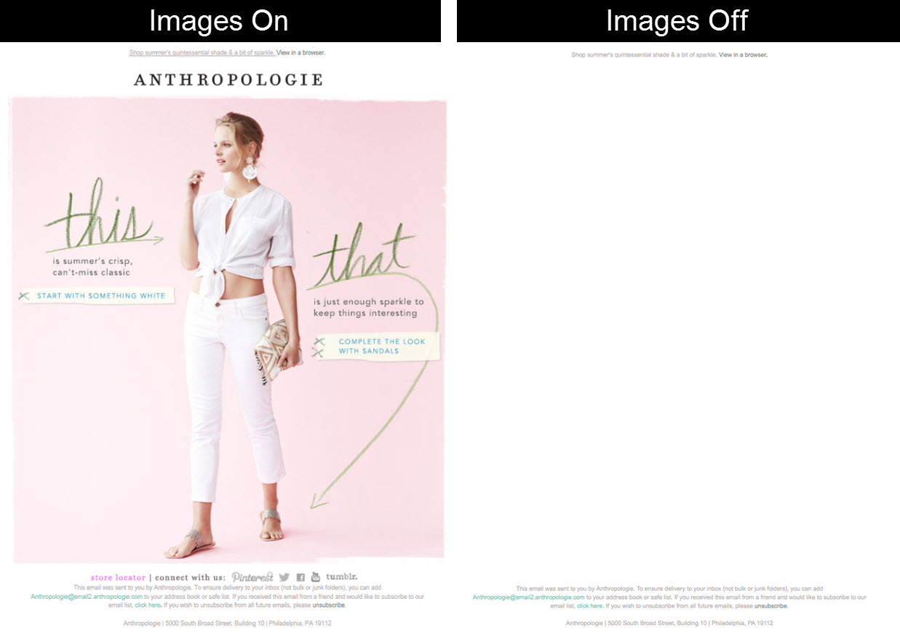

| UX/UI | -> Front | -> ESP | -> Visualiz. |
TODOS son problemáticos
No han diseñado emails en su vida Hulio
No saben las limitaciones...
Tamaños?
Fuentes?
Imágenes?
Videos!?
Diseños que no se pueden llevar a cabo
Debemos transmitirles esas limitiaciones
No solo con emails. También webs, apps...
Tampoco han maquetado en un mail en su vida Hulio
Tampoco conocen las limitaciones...
¡Para eso estamos aquí!
La abordamos al final que va a llevar rato...
Múltiples ESP's (Email service providers)
Modifican HTML: links, píxeles, layout... a su manera
Número de ESPs usados por una misma empresa
Fuente: Litmus
No vamos a cambiar otros departamentos...
Pero si pudiéramos elegir... ESPs transparentes
Posibilidad de integrar la maqueta y el ESP
Maquetaciones "resistentes"
Pruebas integradas
Múltilples clientes
Web (gmail.com): Safari, Crome, Explorer...
Escritorio: Outlook, Apple Mail, Thunderbird...
Móviles: iOS/Android Mail, Gmail App iOS/Android...
Según Litmus: +1.000 webmails, +250 apps
Múltiples tamaños de pantalla
Cada cliente tiene sus reglas, por ej con imgs:
Lógicamente: mejor maquetación
¡Vamos a ello!
Hacer uso de CSS 2.1
Programa como en 1999 (no es broma)
Revisar soporte:
Tablas: CampaignMonitor y MailChimp
Todo debe ir maquetado en tablas
Usa atributos html (width/heigth/border...)
Evita CSS shorthands
Los tamaños siempre en px
Usa celdas vacías para dar espacio
Incluye css para normalizar
Desktop first
Aprovecha las etiquetas condiconales [if gte mso 9]
Usa fallbacks por ej. para fuentes
Evita imágenes si puedes: Peso, red, 404...
Si no has leído el consejo anterior... usa alt
No uses comentarios
Testea bien antes de enviar...
Estilos en línea
Mal soporte de etiqueta <link> -> CSS en línea
<p style="Margin:0;Margin-bottom:24px;color:#0a0a0a;font-family:Helvetica,Arial,sans-serif;font-size:14px;font-weight:400;line-height:1.3;margin:0;margin-bottom:24px;padding:0;text-align:left">
Gracias por contar vuestras historias y hacer posible que Mates crezca cada día.
</p>
In-Liners Online (pa' un apaño):
Mailchimp...
Outlook.com / Hotmail todo bajo clase .ExternalClass
Crea link "ver en.." -> #outlook a{ display: none; }
Más padding -> table{ mso-table-rspace:0pt; }
Redimensiona img { -ms-interpolation-mode:bicubic; }
Letra -> body{ -webkit-text-size-adjust:100%; }
<meta content="telephone=no">
Android
Windows Mobile
Gmail
Thunderbird
Creo que se entiende... ;)
Introducir un stack de desarrollo con:
CSS normalizado
Inliner automático
Layouts probados... ¡y responsives!
Nuestro trabajo no es solo aprender un proceso y ejecutarlo
Nuestro debería ser:
Plantearnos los procesos
Mejorar los procesos
Definir nuevos procesos